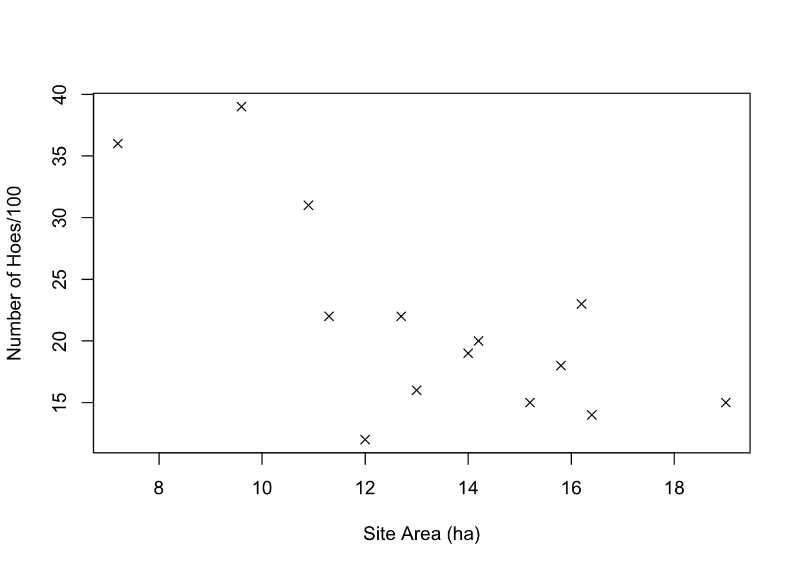
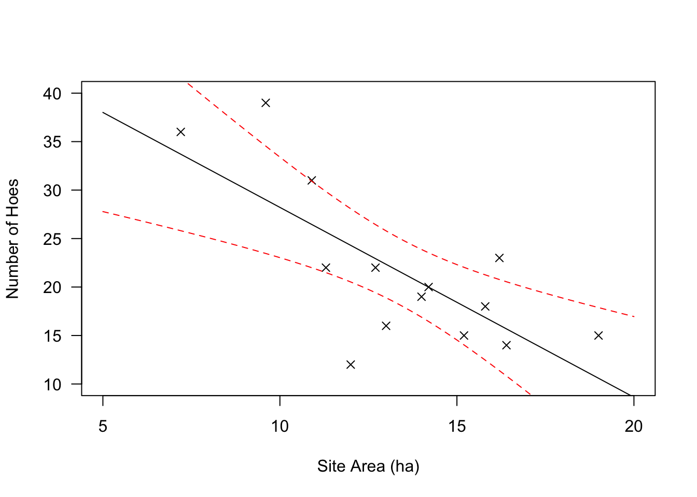
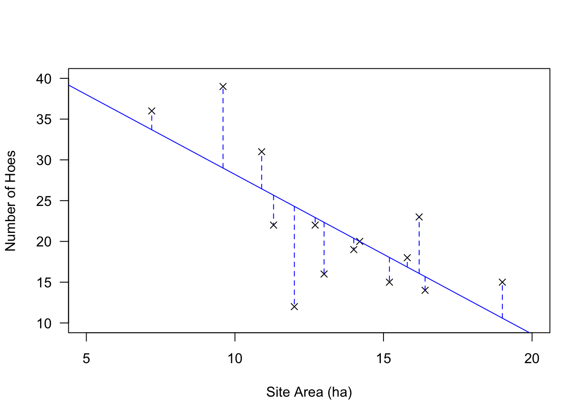
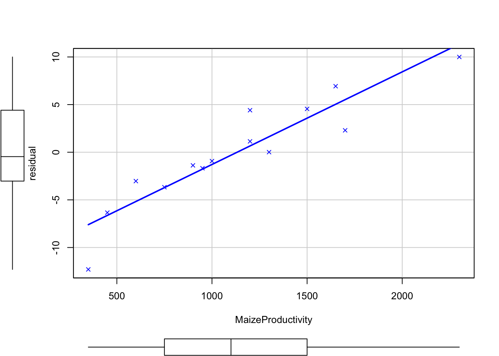
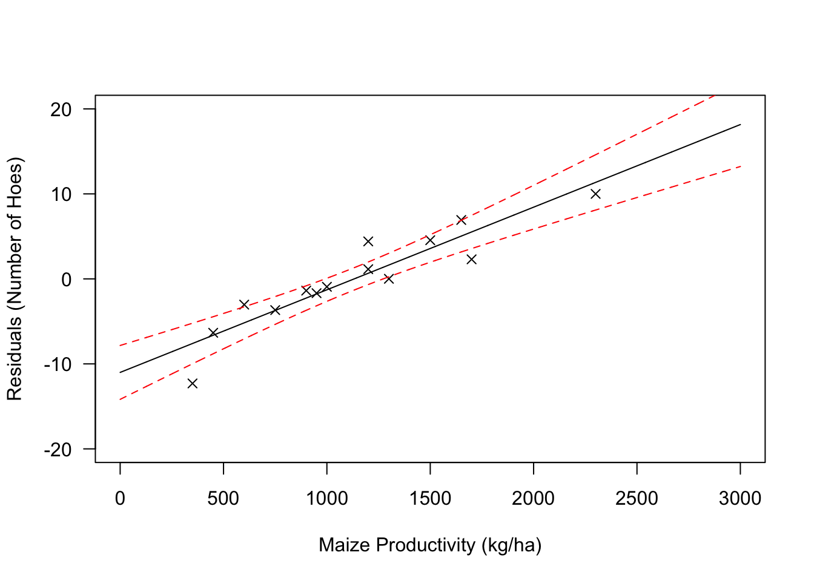

15 Relating a Measurement Variable to Another Measurement Variable (Ch. 15)
Begin by building the data from Table 15.1.
RioSeco_Hoes <- data.frame(Area = c(19, 16.4, 15.8, 15.2, 14.2, 14, 13, 12.7,
12, 11.3, 10.9, 9.6, 16.2, 7.2),
Hoes = c(15, 14, 18, 15, 20, 19, 16, 22, 12, 22,
31, 39, 23, 36))As with any sort of data, simply looking at them is usually the best place to start. In the case of two measurement variables, this means creating a scatterplot (i.e., plotting one variable against the other for each case [row] in your table).
#examine the data by making a scatterplot
plot(RioSeco_Hoes$Area, RioSeco_Hoes$Hoes, pch=4, xlab="Site Area (ha)",
ylab="Number of Hoes/100")
#or in formula notation if you prefer
plot(RioSeco_Hoes$Hoes ~ RioSeco_Hoes$Area, pch=4, xlab="Site Area (ha)",
ylab="Number of Hoes/100")
That plot matches Figure 15.1, showing site area in hectares plotted against the number of hoes per 100 artifacts.
It would be simple enough to approach the question in the way that Drennan first describes (p201): we could classify the site areas into three groups (small, medium, and large), and then apply the techniques that we have already explored for relating a categorical variable to a measurement variable (to - for instance - estimate the population means for each category and compare those using a bullet plot). We won’t go through all of that here, but an example of how to carry out the classification is useful.
A simple way to approach that is to create a new variable (RioSeco_Hoes$SiteClass) and populate it according to a classification rule that we establish. We could easily assign the classes manually with a dataset this small (using the ifelse() function, for instance), but with a large one it’s useful to be able to automate the process using the cut() function (which in a way we have already met; think about what hist() does when it automatically assigns breaks).
Calculating the line of best fit is easily done using the lm() function. We’ll save the results to an object for use in plotting later, and then examine that object to see what lm() has produced for us.
##
## Call:
## lm(formula = Hoes ~ Area, data = RioSeco_Hoes)
##
## Residuals:
## Min 1Q Median 3Q Max
## -12.2994 -2.6945 -0.4595 3.8827 10.0001
##
## Coefficients:
## Estimate Std. Error t value Pr(>|t|)
## (Intercept) 47.802 7.231 6.611 2.5e-05 ***
## Area -1.958 0.527 -3.716 0.00295 **
## ---
## Signif. codes: 0 '***' 0.001 '**' 0.01 '*' 0.05 '.' 0.1 ' ' 1
##
## Residual standard error: 5.877 on 12 degrees of freedom
## Multiple R-squared: 0.5351, Adjusted R-squared: 0.4963
## F-statistic: 13.81 on 1 and 12 DF, p-value: 0.002947The ‘a’ and ‘b’ values that Drennan discusses on p207 are identified as the estimates for the Intercept and Area (the latter because that’s the name of our variable). We can return just those with RegModel.1$coefficients.
Those coefficients, as Drennan discusses, can be used to write an equation predicting the number of hoes for any given site area: \[\textrm{Number of hoes}=(-1.959*\textrm{Site Area})+47.802\]
Using that equation, we can recreate our scatterplot, and then add both the best-fit line and the confidence intervals. To do so we’ll first build the scatterplot, then use our regression model (RegModel.1) to predict the Y values for a sequence of X values; this returns both the fitted point and the boundaries of the 95% confidence region that Drennan describes on p213 (as you’ll see if you examine yp below). See ?predict.lm for details.
plot(RioSeco_Hoes$Hoes ~ RioSeco_Hoes$Area, xlab = "Site Area (ha)", ylab = "Number of Hoes",
las = 1, pch = 4, xlim = c(5,20), ylim = c(10,40))
#create a sequence that spans the space we've plotted at intervals of .1
xp <- data.frame(Area = seq(5, 20, .1))
yp <- predict(RegModel.1, newdata=xp, int = "c", level=.95)
matlines(xp, yp, lty = c(1,2,2), col = c("black","red","red")) 
Note that - for reasons that remain totally mysterious - predict() will get very cranky if you feed it an lm object that was built using $. So, use the first of the following rather than the second, even though both will produce the same linear model.
The matlines() function plots one matrix against another, simplifying the problem of plotting our x coords against three different sets of y coords (examine xp and yp to see why this is necessary); we could also do this with lines(), which is more familiar but requires more lines of code:
plot(RioSeco_Hoes$Hoes ~ RioSeco_Hoes$Area, xlab="Site Area (ha)", ylab="Number of Hoes",
las=1, pch=4, xlim=c(5,20), ylim=c(10,40))
lines(xp$Area, yp[,1], lty=1, col="black")
lines(xp$Area, yp[,2], lty=2, col="red")
lines(xp$Area, yp[,3], lty=2, col="red")
We can also obtain the \(r^2\) value by running summary() on our lm() object. You’ll notice that this returns an abundance of information; see ?summary.lm for details.
Obviously r is \(\sqrt{r^2}\), and takes its sign from the sign of the slope of the line of best fit (b, or the coefficient for our variable).
## [1] 0.5350827## Estimate Std. Error t value Pr(>|t|)
## (Intercept) 47.801854 7.230813 6.610854 0.0000249808
## Area -1.958538 0.527010 -3.716321 0.0029465939## [1] 0.7314935Since r takes the sign of the estimate for our variable (‘Area’), which is negative, r = -0.7314935.
The F statistic for regression, which measures the significance of the relationship between the two variables, is calculated by \[F=\frac{r^2/1}{(1-r^2)/(n-2)}\] We can retrieve F, and the associated p value, from our lm() object as well.
## value
## 13.81104## [1] 0.002946594You’ll notice that running summary() on an lm object also returns the residuals, and you’ve seen how we can use predict() to calculate a predicted value of y for a given value of x. We can add predicted values and residuals to our RioSeco_Hoes data frame (creating Drennan’s Table 15.2).
RioSeco_Hoes$predicted <- round(fitted(RegModel.1), 2)
RioSeco_Hoes$residual <- round(residuals(RegModel.1), 2)
kable(RioSeco_Hoes) %>% kableExtra::kable_classic(full_width = F)| Area | Hoes | SiteClass | predicted | residual |
|---|---|---|---|---|
| 19.0 | 15 | large | 10.59 | 4.41 |
| 16.4 | 14 | large | 15.68 | -1.68 |
| 15.8 | 18 | large | 16.86 | 1.14 |
| 15.2 | 15 | large | 18.03 | -3.03 |
| 14.2 | 20 | medium | 19.99 | 0.01 |
| 14.0 | 19 | medium | 20.38 | -1.38 |
| 13.0 | 16 | medium | 22.34 | -6.34 |
| 12.7 | 22 | medium | 22.93 | -0.93 |
| 12.0 | 12 | medium | 24.30 | -12.30 |
| 11.3 | 22 | medium | 25.67 | -3.67 |
| 10.9 | 31 | small | 26.45 | 4.55 |
| 9.6 | 39 | small | 29.00 | 10.00 |
| 16.2 | 23 | large | 16.07 | 6.93 |
| 7.2 | 36 | small | 33.70 | 2.30 |
With those values added, we can now create Drennan’s Figure 15.6, illustrating the residuals:
plot(RioSeco_Hoes$Hoes ~ RioSeco_Hoes$Area, xlab="Site Area (ha)",
ylab="Number of Hoes", las = 1, pch = 4, xlim = c(5,20), ylim = c(10,40))
abline(RegModel.1, col = "blue")
matlines(t(cbind(RioSeco_Hoes$Area, RioSeco_Hoes$Area)),
t(cbind(RioSeco_Hoes[,4], RioSeco_Hoes[,4] + RioSeco_Hoes[,5])),
lty=2, col="blue")
We can add the productivity data from Table 15.3 to our data frame also:
RioSeco_Hoes$MaizeProductivity <- c(1200, 950, 1200, 600, 1300, 900, 450, 1000, 350, 750,
1500, 2300, 1650, 1700)Simply plotting the data - i.e., graphically examining the correlation between the maize productivity and the residuals from our previous regression analysis - gives us a pretty good idea that there is a correlation that merits further investigation.

We’ll go on to build a linear model as we did above, using lm(), but the scatterplot() function from the car package is an elegant alternative for an initial examination.

A visual inspection gives us the idea that the best fit line is probably pretty useful (it fits the points pretty well), so it’s a good idea to build a linear model and examine the results.
##
## Call:
## lm(formula = residual ~ MaizeProductivity, data = RioSeco_Hoes)
##
## Residuals:
## Min 1Q Median 3Q Max
## -4.6981 -1.0035 0.3218 0.9492 3.7497
##
## Coefficients:
## Estimate Std. Error t value Pr(>|t|)
## (Intercept) -11.004009 1.454934 -7.563 6.65e-06 ***
## MaizeProductivity 0.009720 0.001169 8.314 2.53e-06 ***
## ---
## Signif. codes: 0 '***' 0.001 '**' 0.01 '*' 0.05 '.' 0.1 ' ' 1
##
## Residual standard error: 2.26 on 12 degrees of freedom
## Multiple R-squared: 0.8521, Adjusted R-squared: 0.8398
## F-statistic: 69.13 on 1 and 12 DF, p-value: 2.529e-06We can also plot the regression line and its confidence interval, to produce Figure 15.8.
plot(RioSeco_Hoes$residual ~ RioSeco_Hoes$MaizeProductivity, xlab =
"Maize Productivity (kg/ha)", ylab = "Residuals (Number of Hoes)",
las = 1, pch = 4, xlim = c(0,3000), ylim = c(-20,20))
xp <- seq(0, 3000, 1)
yp <- predict(RegModel.2, list(MaizeProductivity = xp), int="c")
matlines(xp, yp, lty = c(1,2,2), col = c("black","red","red")) 
As Drennan notes, the correlation is both strong and significant. We can extract \(r^2\) and p from summary(), and rather than calculate r we can produce it more simply using the cor.test() function.
##
## Pearson's product-moment correlation
##
## data: RioSeco_Hoes$MaizeProductivity and RioSeco_Hoes$residual
## t = 8.3143, df = 12, p-value = 2.529e-06
## alternative hypothesis: true correlation is not equal to 0
## 95 percent confidence interval:
## 0.7692698 0.9757642
## sample estimates:
## cor
## 0.9230843Drennan goes on (p217) to point out that we can both create a new equation that predicts the values of the residuals for number of hoes, and then combine that equation with the one we produced earlier for predicting numbers of hoes.
Our initial equation: \[\textrm{Number of hoes}=(-1.959*\textrm{Site Area})+47.802\]
Based on the values in summary(RegModel.2), we can complement that with: \[\textrm{Residual number of hoes}=(0.01*\textrm{Maize productivity}) -11.004\]
Combining these two produces \[\textrm{Number of hoes}=\{(-1.959*\textrm{Site Area})+47.802\}+\{(0.01*\textrm{Maize productivity}) -11.004\}\]
As Drennan hints, these steps can be combined to conduct a multiple regression, predicting the number of hoes from both site area and maize productivity simultaneously. You’ll find this pleasantly straightforward using lm():
##
## Call:
## lm(formula = Hoes ~ Area + MaizeProductivity, data = RioSeco_Hoes)
##
## Residuals:
## Min 1Q Median 3Q Max
## -3.3016 -0.7414 0.3711 1.0160 1.9560
##
## Coefficients:
## Estimate Std. Error t value Pr(>|t|)
## (Intercept) 28.8448796 2.5930686 11.124 2.53e-07 ***
## Area -1.4370562 0.1549888 -9.272 1.56e-06 ***
## MaizeProductivity 0.0105754 0.0008939 11.830 1.35e-07 ***
## ---
## Signif. codes: 0 '***' 0.001 '**' 0.01 '*' 0.05 '.' 0.1 ' ' 1
##
## Residual standard error: 1.657 on 11 degrees of freedom
## Multiple R-squared: 0.9661, Adjusted R-squared: 0.96
## F-statistic: 156.8 on 2 and 11 DF, p-value: 8.214e-0915.1 Practice
Data for the practice problems can be found in Yenang.txt.